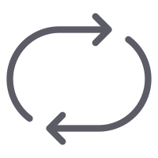
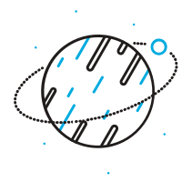

MUSICVIZ
＋ 添加音乐
参数
PLAYLIST
⇢
暂无音频文件
点击「添加音乐」
或将音频拖拽到这里
将音频文件拖拽到这里
音乐可视化工作台
添加音频后开始播放 · 支持 MP3 WAV OGG
完整参数
可视化主题
条形频谱
圆形频谱
声波形态
粒子星云
音频隧道
星系旋转

综合循环
色彩方案
深色
浅色
参数调节
渲染模式
Canvas
Canvas
WebGL
灵敏度
1.5
拖影强度
0.18
节拍震感
1.5
律动节拍
120 BPM
关
提示音
♩♩♩♩
♪♪♪♪
♬♬♬♬
强 弱
强弱弱
强弱次弱
长短短
短短长
长短短长
三连音
— 条形频谱 —
条形数量
128
频率范围
0 – 16000 Hz
— 圆形频谱 —
辐射条数
256
— 声波形态 —
波速
0.08
— 粒子星云 —
粒子数量
400
动画速度
1.0
— 音频隧道 —
环数
26
旋转速度
1.0
— 星系旋转 —
旋臂数
5
旋转速度
1.0
— 综合循环 —
动画速度
1.0
背景特效
雨
雪
雾

星空
闪电
极光
星星密度
420
雨速
1.0
雪花密度
170
雾浓度
0.5
闪电频率
0.5
极光强度
0.5
图片互动
🖼 添加图片
🎬 导入视频
📺 视频背景
灰度
半调
光效
圆形
矩形
无图片
图片大小
0.22
律动强度
.60
↺ 重置位置
实时频谱
低频
中频
高频
主题 / 背景
▾
主题
条形频谱
圆形频谱
声波形态
粒子星云
音频隧道
星系旋转
综合循环
背景
雨
雪
雾
星空
闪电
极光
未加载音乐
MusicViz · 音乐可视化
☰
⏮
⏭
0:00
0:00
🔊